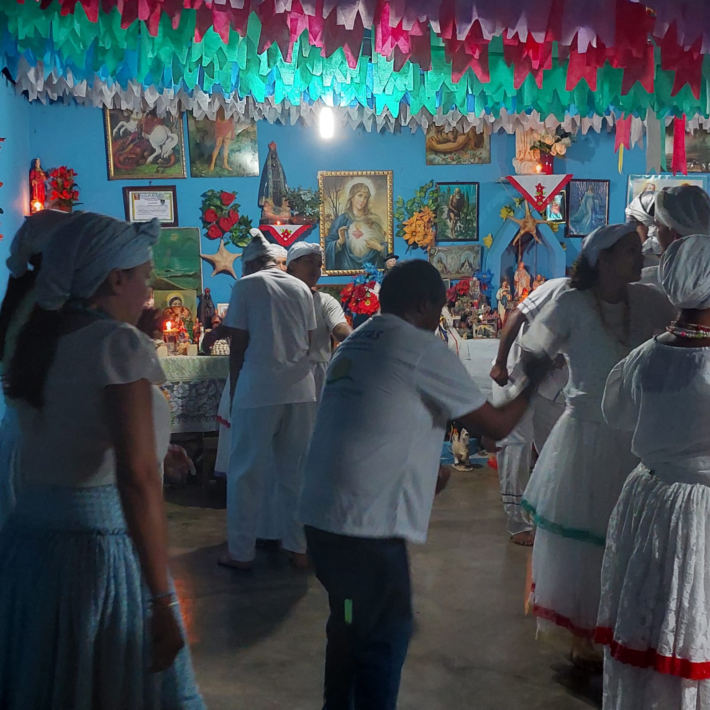

São Raimundo Nonato é uma cidade rica em cultura e tradições, e as festividades são uma parte importante da vida local. Um dos exemplos de festividades de São Raimundo Nonato é a festa do padroeiro da cidade, que é celebrada no mês de agosto. A festa inclui uma procissão em honra ao santo, missas, apresentações culturais e shows musicais. Além dessas festas, São Raimundo Nonato também celebra o Carnaval, com desfiles de blocos e escolas de samba, e a Festa de Nossa Senhora da Conceição, que é realizada em dezembro e inclui missas, novenas e apresentações culturais. As festividades de São Raimundo Nonato possui um calendário que informa em qual mês do ano acontece as festas. São elas: